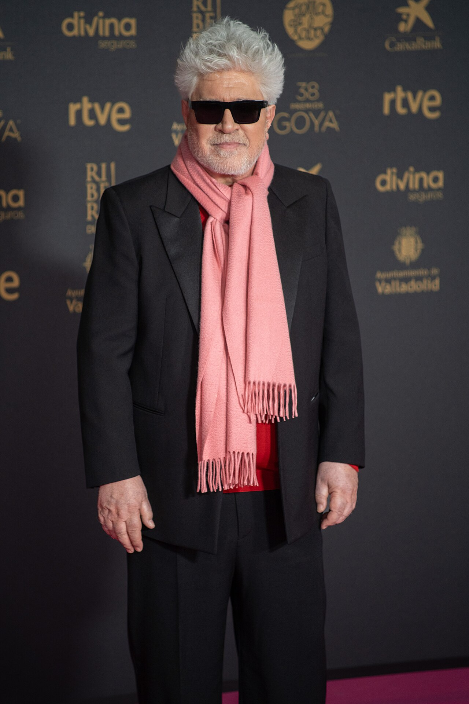
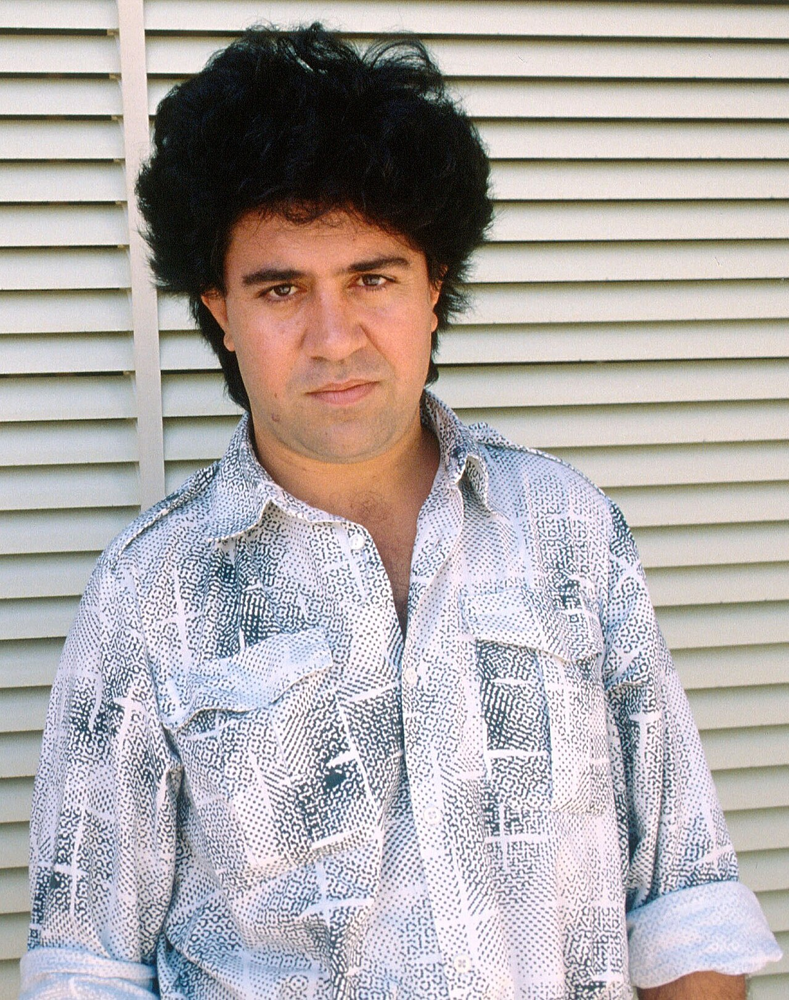
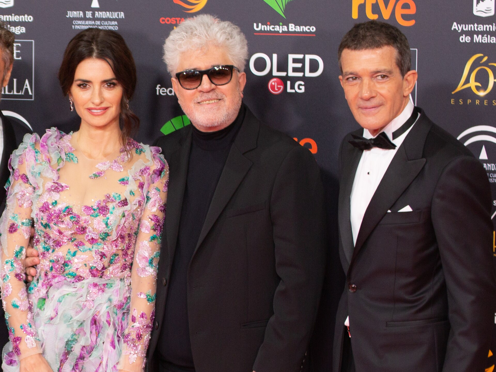
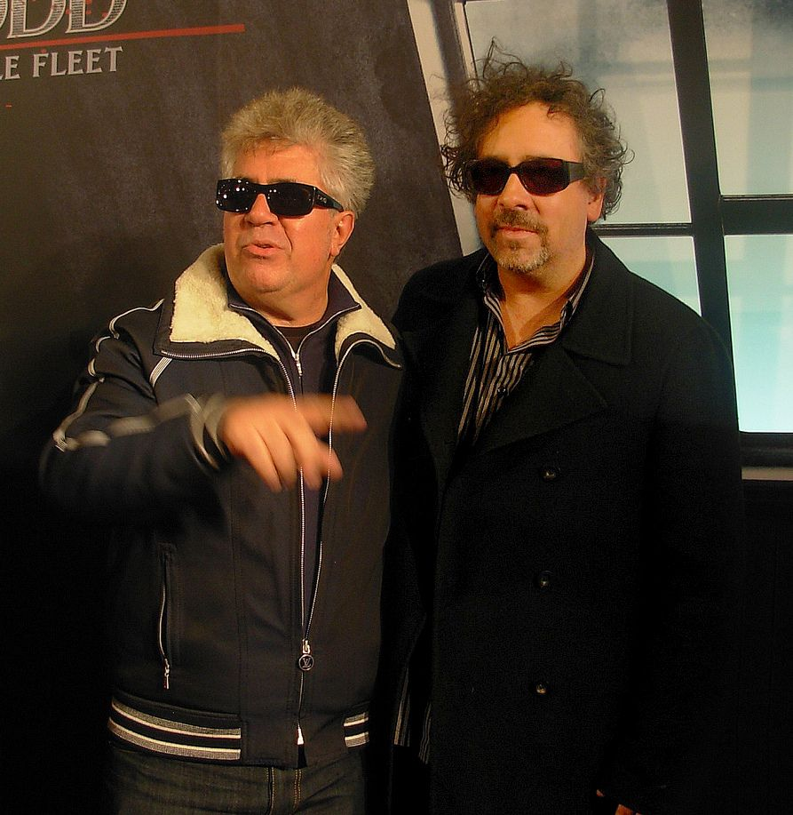

Pedro Almodóvar Biography: Age, Career, Movies, Awards and Personal Life
He is the most famous Spanish filmmaker alive — and the first director on Stars of Europe. Pedro Almodóvar has spent more than forty years making films nobody else could make: bright, funny, heartbreaking melodramas about mothers, lovers, actresses and nuns, shot in colours so loud they became his signature. He has won two Academy Awards, directed three stars already on this site — Penélope Cruz, Javier Bardem and Antonio Banderas — and, at 77, he has just released his 24th feature film, Bitter Christmas, in November 2026.

Key takeaways
- Born 25 September 1949 in Calzada de Calatrava, Spain; age 77 as of November 2026. The most internationally acclaimed Spanish filmmaker since Luis Buñuel.
- Moved to Madrid at 16 in 1967; worked 12 years as an administrative assistant at the telephone company Telefónica while teaching himself filmmaking with a Super-8 camera.
- Breakthrough with Women on the Verge of a Nervous Breakdown (1988); then two Academy Awards — Best Foreign Language Film for All About My Mother (1999) and Best Original Screenplay for Talk to Her (2002).
- His first English-language feature, The Room Next Door (2024), won the Golden Lion at Venice — the first Golden Lion ever won by a Spanish film.
- His 24th feature, Bitter Christmas (Amarga Navidad), opened in select US theatres on 13 November 2026 and goes nationwide on 25 November 2026.
- Net worth is estimated at $20m–$50m. Openly gay; with his partner, actor and photographer Fernando Iglesias, since 2002; his younger brother Agustín has produced all his films since 1986 through their company El Deseo.
Who Is Pedro Almodóvar?
| Full name | Pedro Almodóvar Caballero |
|---|---|
| Date of birth | 25 September 1949 |
| Age | 77 (as of November 2026) |
| Birthplace | Calzada de Calatrava, Ciudad Real, Spain |
| Nationality | Spanish |
| Profession | Film director, screenwriter, producer, author |
| Years active | 1974–present |
| Known for | Women on the Verge of a Nervous Breakdown, All About My Mother, Talk to Her, Volver, Pain and Glory, The Room Next Door |
| Partner | Fernando Iglesias (since 2002) |
| Production company | El Deseo (founded 1986 with his brother Agustín) |
| Net worth | $20m–$50m (estimated range) |
Pedro Almodóvar is the director who put modern Spanish cinema on the world map. Since the early 1980s he has made films that look like no one else’s: saturated reds and blues, women at the centre of every story, melodrama played straight and funny at the same time, and a tenderness towards outsiders — actresses, trans women, nuns, mothers, lovers — that made him beloved far beyond Spain. He is, by most measures, the most important Spanish filmmaker since Luis Buñuel, and the only Spanish director with two Academy Awards to his name.
What makes his story unusual is how he got there. He never went to film school — he could not, because the dictator Francisco Franco had closed Spain’s National School of Cinema. He moved to Madrid at sixteen, worked for twelve years as a clerk at the national telephone company, and taught himself to make films with a Super-8 camera bought with his first paycheque. The phone company job ended at three in the afternoon, and the rest of the day belonged to cinema.
He is also the director behind three stars already on this site. Penélope Cruz has starred in seven of his films, from Live Flesh (1997) to Parallel Mothers (2021). Antonio Banderas made his film debut in Almodóvar’s Labyrinth of Passion (1982) and won Best Actor at Cannes for Pain and Glory (2019). Javier Bardem worked with him in Live Flesh (1997). Almodóvar is the thread that ties the Spanish section of this site together.
Age and Early Life — La Mancha, Madrid and Telefónica
Pedro Almodóvar Caballero was born on 25 September 1949 in Calzada de Calatrava, a small farming town in the province of Ciudad Real, in the La Mancha region of Spain. He was the third of four children: two older sisters, Antonia and María Jesús, and a younger brother, Agustín, who would later become his producer. His father, Antonio Almodóvar, was a winemaker who died in 1980; his mother, Francisca Caballero (1916–1999), read and wrote letters for neighbours who could not read. The women of that village — gossiping, singing, doing the laundry together in the patios — became the raw material of his films for the next fifty years.
When Pedro was eight, the family moved to Cáceres, in Extremadura, where he was educated by Salesian and Franciscan priests at a Catholic boarding school. He has said he knew early on that the priesthood was not for him. At sixteen, in 1967, against his parents’ wishes, he left for Madrid to become a filmmaker. The National School of Cinema had just been closed by Franco, so there was no school to go to. He became self-taught instead.
To survive in Madrid he took whatever work he could find, including selling used items in El Rastro, the city’s famous flea market. In 1969 he passed a state examination and became an administrative assistant at Telefónica, the national telephone company, where he stayed for twelve years. The job finished at three in the afternoon, which left him the rest of the day for the thing he actually cared about. With his first paycheque from Telefónica, at the age of 22, he bought a Super-8 camera and started making short films by hand.


First Films — Super-8 Shorts and La Movida
Almodóvar made his first short film around 1974, and by the end of the 1970s his shorts were being shown in Madrid’s night circuit and in Barcelona. They were shot on Super-8, had no soundtrack, and had deliberately provocative titles — Two Whores, or, A Love Story that Ends in Marriage (1974), The Fall of Sodom (1975), Homage (1976). In 1978 he made his first full-length film on Super-8, Folle, folle, fólleme, Tim, and his first 16 mm short, Salomé.
His first commercial feature was Pepi, Luci, Bom (1980), a rough, funny film about the punk scene in Madrid after Franco’s death. It was made with almost no money, and it found its audience in the city’s underground scene. It was the first film of La Movida Madrileña, the explosion of music, art and nightlife that followed the end of the dictatorship, and Almodóvar became its filmmaker-in-chief. The films came fast after that: Labyrinth of Passion (1982), which gave a young Antonio Banderas his film debut; Dark Habits (1983), about nuns in a convent; Matador (1986); and Law of Desire (1987), his first openly gay love story and the first film produced by his own company.
That company, El Deseo, was founded in 1986 with his younger brother Agustín, who had studied chemistry before moving into film. Agustín has produced every one of Pedro’s films since Law of Desire, and El Deseo has also produced films by other directors, including Guillermo del Toro and Lucrecia Martel. It is one of the most important independent production companies in Europe, and it is still a family business: Pedro owns about 85% of it, Agustín about 15%.
Women on the Verge — The Breakthrough
Women on the Verge of a Nervous Breakdown (1988) is the film that made Almodóvar world-famous. Carmen Maura plays Pepa, a voice-dubbing actress whose married lover has left her, and who spends two frantic days in her Madrid apartment dealing with his answering machine, a suitcase full of clothes, a gazpacho laced with sleeping pills and a cast of women in various states of crisis. It is a farce, a melodrama and a love letter to Madrid at the same time, and it was nominated for the Academy Award for Best Foreign Language Film. It won five Goya Awards in Spain and made Almodóvar a name in America.
The success changed everything. Tie Me Up! Tie Me Down! (1989) reunited him with Banderas, and High Heels (1991) and Kika (1993) followed, with Victoria Abril, Marisa Paredes and Rossy de Palma — the tall, unmistakable actress who became one of his regulars — in the casts. The Flower of My Secret (1995) was a quieter, sadder film, and Live Flesh (1997) gave him two future stars at once: Penélope Cruz in a small role, and Javier Bardem as a policeman who is shot and paralysed in the opening minutes. By the end of the 1990s he was no longer the enfant terrible of Madrid. He was Spain’s most respected living director — and he was about to make the two films that would win him Oscars.
All About My Mother and Talk to Her — Two Oscars
All About My Mother (1999) is often called Almodóvar’s masterpiece. Cecilia Roth plays Manuela, a nurse in Madrid whose teenage son Esteban is killed by a car on his seventeenth birthday, on the night she has taken him to see A Streetcar Named Desire. She travels to Barcelona to find the boy’s father, a trans woman named Lola, and instead finds a family of her own choosing: Agrado, a trans sex worker played by Antonia San Juan; Rosa, a young nun who is pregnant and HIV-positive, played by Penélope Cruz; and Huma Rojo, a famous actress, played by Marisa Paredes. It is a film about mothers, actresses, grief and the families people build for themselves — and it won Almodóvar his first Academy Award, for Best Foreign Language Film, along with Best Director at Cannes, a Golden Globe and two BAFTAs. It grossed more than $67 million worldwide, and it remains the most awarded film in Spanish cinema history.
Three years later came Talk to Her (2002), a stranger and more unsettling film. Two men — a nurse, Benigno, and a writer, Marco — become friends while watching over two women in comas: a bullfighter gored in the ring, and a ballet dancer after a car crash. The film asks uncomfortable questions about love, loneliness and obsession, and it earned Almodóvar his second Academy Award, this time for Best Original Screenplay, plus a nomination for Best Director. No Spanish director before him had won two Oscars, and none has since.
Volver, Pain and Glory and Parallel Mothers
Volver (2006) brought Almodóvar back to La Mancha, and back to Penélope Cruz. Cruz plays Raimunda, a working-class mother in Madrid whose dead mother — played by Carmen Maura, in their first film together in eighteen years — appears to have come back as a ghost. The film is about three generations of women, about death and secrets and the way mothers protect their daughters, and it won Best Screenplay for Almodóvar and Best Actress for its ensemble cast at Cannes. Cruz was nominated for the Academy Award for Best Actress, the first Spanish actress ever nominated in that category.
After Broken Embraces (2009), The Skin I Live In (2011) — a dark thriller with Banderas as a plastic surgeon — and the comedy I’m So Excited! (2013), Almodóvar made Julieta (2016), a quiet drama about a mother and the daughter who has cut her off. Then, in 2019, came the film many critics call his most personal: Pain and Glory (Dolor y gloria). Banderas plays Salvador Mallo, an ageing film director in poor health, living alone in Madrid, looking back over his childhood in a cave house in Valencia, his first love, and his mother, played by Julieta Serrano. It is the closest Almodóvar has come to telling his own story on screen, and Banderas won Best Actor at Cannes for it.

.jpg){kind=link}
Parallel Mothers (Madres paralelas, 2021) followed two years later, and it opened the Venice Film Festival. Cruz plays Janis, a photographer in her forties who becomes pregnant after an affair, and who shares a hospital room with Ana, a frightened teenager who is also about to give birth. The film is about motherhood, but it is also about Spain’s buried past: Janis is trying to find the body of her great-grandfather, shot by Franco’s forces in the Civil War and thrown into a mass grave. Cruz won the Volpi Cup for Best Actress at Venice and was nominated for the Academy Award for Best Actress. It was her seventh film with Almodóvar, and the second time he had taken her to an Oscar nomination.
The Room Next Door and Bitter Christmas (2026)
In 2024, at the age of 74, Almodóvar did something he had never done before: he made a film in English. The Room Next Door stars Tilda Swinton and Julianne Moore as two old friends, a war correspondent and a novelist, reunited when one of them is dying of cancer and asks the other to be with her at the end. It is adapted from Sigrid Nunez’s novel What Are You Going Through, and it won the Golden Lion at the 81st Venice International Film Festival — the first Golden Lion ever won by a Spanish film. He had already received Venice’s Honorary Golden Lion for Lifetime Achievement in 2019; now he had won the festival’s top prize as well.
His 24th feature, Bitter Christmas (Amarga Navidad), is a return to Spanish — and to himself. It tells two stories at once: Elsa, an advertising director played by Bárbara Lennie, struggling with grief and migraines in December 2004; and Raúl, a veteran filmmaker played by Leonardo Sbaraglia, struggling with writer’s block in 2026 as he writes Elsa’s story. It is a film about making films, about where a director’s characters come from, and about the people closest to him — and Raúl is, by Almodóvar’s own admission, a version of himself. The film premiered in competition at the Cannes Film Festival in May 2026, opened in Spain in March 2026, and arrived in American cinemas in November 2026: in New York and Los Angeles on 13 November, and nationwide on 25 November. Rossy de Palma, his collaborator since the 1980s, is in the cast, alongside Aitana Sánchez-Gijón, Quim Gutiérrez, Victoria Luengo, Patrick Criado and Milena Smit.
Awards — Two Oscars, Cannes, Venice and the Goyas
Almodóvar’s list of awards is one of the longest of any living director. He has won two Academy Awards — Best Foreign Language Film for All About My Mother (presented in 2000) and Best Original Screenplay for Talk to Her (presented in 2003) — and been nominated for Best Director for Talk to Her. At Cannes he won Best Director for All About My Mother in 1999 and Best Screenplay for Volver in 2006. At Venice he won the Golden Lion for The Room Next Door in 2024 and the Honorary Golden Lion for Lifetime Achievement in 2019. He has also won two Golden Globes, five BAFTA Awards and five Goya Awards, the Honorary César in 1999, the French Legion of Honour in 1997, and the European Film Academy’s Achievement in World Cinema Award in 2013. Harvard University gave him an honorary doctorate in 2009, and the University of Oxford did the same in 2016. In 2017 he was president of the jury at the Cannes Film Festival.
Net Worth 2026
Pedro Almodóvar’s net worth is estimated at $20 million–$50 million. That is a range, not a single figure, and it is an estimate — because the sources disagree sharply. Several profiles put his fortune at about $20 million, while Celebrity Net Worth puts it at $50 million. The higher figure rests on his company: Spanish financial reporting in 2026 showed that El Deseo’s parent company holds more than €48 million in shareholder equity, and Pedro owns about 85% of it — a stake worth roughly €41 million, or about $46 million, on paper. The lower figure reflects the fact that most of that wealth is tied up in the company, not in cash. Either way, the money comes from the same place: more than forty years of films, and the production company he built with his brother. See our Top 10 Richest Celebrities page for the current ranking; his position there will be confirmed after this article is uploaded.
Personal Life
Almodóvar is openly gay, and he has been with his partner, the actor and photographer Fernando Iglesias, since 2002. Iglesias has appeared in small roles in several of his films. The two live in separate homes in neighbouring districts of Madrid — Almodóvar in Argüelles, Iglesias in Malasaña — and Almodóvar has lived since 2007 in an apartment on Paseo del Pintor Rosales, in the west of the city. He has no children.
His closest working relationship is with his younger brother Agustín, born in 1955, who has produced all of his films since 1986 and runs El Deseo with him. His two older sisters, Antonia and María Jesús, have stayed out of the public eye. He is also close to the actors he returns to again and again: Penélope Cruz, who has made seven films with him; Carmen Maura, his first great muse; Rossy de Palma, who has been in his films since the 1980s; and Antonio Banderas, whose career he launched and with whom he reunited thirty years later for Pain and Glory.


He still lives and works in Madrid, the city he ran away to at sixteen, and he still makes films the same way he always has: writing the script himself, shooting in Spain, and working with the same small circle of collaborators. At 77, with a new film in cinemas and a Golden Lion behind him, he shows no sign of stopping.
Filmography Highlights
| Year | Title | Notes |
|---|---|---|
| 1980 | Pepi, Luci, Bom | First commercial feature; La Movida Madrileña |
| 1982 | Labyrinth of Passion | Antonio Banderas’s film debut |
| 1983 | Dark Habits | Convent comedy with Carmen Maura |
| 1986 | Matador | El Deseo founded the same year |
| 1987 | Law of Desire | First film produced by El Deseo |
| 1988 | Women on the Verge of a Nervous Breakdown | Oscar-nominated; 5 Goyas |
| 1989 | Tie Me Up! Tie Me Down! | With Antonio Banderas |
| 1991 | High Heels | With Victoria Abril and Marisa Paredes |
| 1995 | The Flower of My Secret | With Marisa Paredes |
| 1997 | Live Flesh | With Javier Bardem; Penélope Cruz in a small role |
| 1999 | All About My Mother | Oscar, Best Foreign Language Film; Cannes Best Director |
| 2002 | Talk to Her | Oscar, Best Original Screenplay |
| 2004 | Bad Education | With Gael García Bernal |
| 2006 | Volver | Cannes Best Screenplay and Best Actress; Cruz Oscar-nominated |
| 2009 | Broken Embraces | With Penélope Cruz and Lluís Homar |
| 2011 | The Skin I Live In | With Antonio Banderas |
| 2016 | Julieta | With Emma Suárez and Adriana Ugarte |
| 2019 | Pain and Glory | Banderas won Best Actor at Cannes |
| 2021 | Parallel Mothers | Cruz won the Volpi Cup at Venice |
| 2024 | The Room Next Door | First English-language feature; Golden Lion, Venice |
| 2026 | Bitter Christmas (Amarga Navidad) | 24th feature; US release 13–25 November 2026 |
FAQs
How old is Pedro Almodóvar?
Pedro Almodóvar was born on 25 September 1949 in Calzada de Calatrava, Spain. He is 77 years old as of November 2026.
How many Oscars has Pedro Almodóvar won?
Two. He won Best Foreign Language Film for All About My Mother (1999) and Best Original Screenplay for Talk to Her (2002). He was also nominated for Best Director for Talk to Her.
What is Pedro Almodóvar’s most famous film?
All About My Mother (1999) is usually named first: it won the Oscar, Best Director at Cannes, a Golden Globe and two BAFTAs, and grossed more than $67 million worldwide. Women on the Verge of a Nervous Breakdown (1988) made him famous, and Talk to Her (2002) won him his second Oscar.
What is Pedro Almodóvar’s new film in 2026?
Bitter Christmas (Amarga Navidad), his 24th feature film. It stars Bárbara Lennie and Leonardo Sbaraglia, premiered at the Cannes Film Festival in May 2026, opened in select US theatres on 13 November 2026, and goes nationwide in the United States on 25 November 2026.
How many films has Pedro Almodóvar made with Penélope Cruz?
Seven: Live Flesh (1997), All About My Mother (1999), Volver (2006), Broken Embraces (2009), I’m So Excited! (2013), Pain and Glory (2019) and Parallel Mothers (2021). Cruz was Oscar-nominated for Volver and Parallel Mothers, and won Best Actress at Venice for Parallel Mothers.
Who is Pedro Almodóvar’s partner?
He has been with his partner, the actor and photographer Fernando Iglesias, since 2002. Iglesias has appeared in small roles in several of his films. They live in separate homes in neighbouring districts of Madrid.
What is El Deseo?
El Deseo is the production company Pedro Almodóvar founded in 1986 with his younger brother Agustín, who has produced all of his films since Law of Desire (1987). Pedro owns about 85% of the company and Agustín about 15%.
What is Pedro Almodóvar’s net worth?
His net worth is estimated at $20 million–$50 million. Sources disagree: several profiles say about $20 million, while Celebrity Net Worth says $50 million, pointing to El Deseo’s reported €48 million-plus in shareholder equity. No single number is given.
Did Pedro Almodóvar go to film school?
No. He moved to Madrid at sixteen to enrol, but the National School of Cinema had been closed by Franco, so he taught himself. He worked for twelve years as an administrative assistant at the telephone company Telefónica and bought his first Super-8 camera with his first paycheque.
What was Pedro Almodóvar’s first film in English?
The Room Next Door (2024), starring Tilda Swinton and Julianne Moore. It won the Golden Lion at the Venice Film Festival — the first Golden Lion ever won by a Spanish film.
Sources
Facts in this article were checked against: Wikipedia — Pedro Almodóvar (birth date/place 25 September 1949 Calzada de Calatrava, full name Pedro Almodóvar Caballero, parents Antonio Almodóvar and Francisca Caballero 1916–1999, sisters Antonia and María Jesús, brother Agustín, move to Madrid 1967, National School of Cinema closed by Franco, El Rastro, Telefónica administrative assistant 12 years, Super-8 camera bought with first paycheque at 22, first short c. 1974, first Super-8 feature 1978, El Deseo founded 1986 with Agustín, two Academy Awards, Cannes Best Director 1999 and Best Screenplay 2006, Golden Lion 2024, Honorary Golden Lion 2019, five BAFTAs, five Goyas, two Golden Globes, Honorary César 1999, Legion of Honour 1997, European Film Academy Achievement in World Cinema Award 2013, honorary doctorates Harvard 2009 and Oxford 2016, Cannes jury president 2017, partner Fernando Iglesias since 2002, apartment on Paseo del Pintor Rosales since 2007, years active 1974–present); Wikipedia — List of awards and nominations received by Pedro Almodóvar (Oscar wins and nominations, Cannes and Venice wins); Britannica — Pedro Almodóvar (born 25 September 1949; Pepi, Luci, Bom 1980); Wikipedia — Parallel Mothers (Venice premiere 1 September 2021, Cruz Volpi Cup for Best Actress, two Oscar nominations) and Penélope Cruz (seven Almodóvar films; Oscar nominations for Volver and Parallel Mothers); Sony Pictures Classics / press coverage of Bitter Christmas (24th feature, Cannes premiere May 2026, Spain release 20 March 2026, US release 13 November 2026 in New York and Los Angeles and 25 November 2026 nationwide, cast including Bárbara Lennie, Leonardo Sbaraglia, Aitana Sánchez-Gijón and Rossy de Palma, 111 minutes); Celebrity Net Worth — Pedro Almodóvar net worth ($50 million; El Deseo parent company over €48 million shareholder equity, Pedro owns 84.99%); TheRichest, TheCityCeleb, Far Out Magazine, Super Stars Bio, Taddlr and NetWorthFigures (net worth about $20 million); Wikimedia Commons (hero photo: “Goyas 2024 - Pedro Almodóvar.jpg”, Pedro J Pacheco, CC BY-SA 4.0; 1988 photo: “Pedro Almodóvar 1988.jpg”, Gorupdebesanez, CC BY 3.0; Goya 2020 team photo: “Premios Goya 2020 - Equipo Dolor y gloria (Cruz, Almodóvar, Banderas).jpg”, Pedro J Pacheco, CC BY-SA 4.0; Tim Burton photo: “Pedro Almodóvar and Tim Burton 01.jpg”, CynSimp, CC BY-SA 2.0). All writing is original to Stars of Europe. Deliberately left out: the Commons category page’s conflicting birth dates (24 September 1949 in its English text, 1951 in its Spanish text), which contradict Wikipedia, Britannica and IMDb; and the 2016 Panama Papers listing and the 2009 Polanski petition, which are not part of his film career.